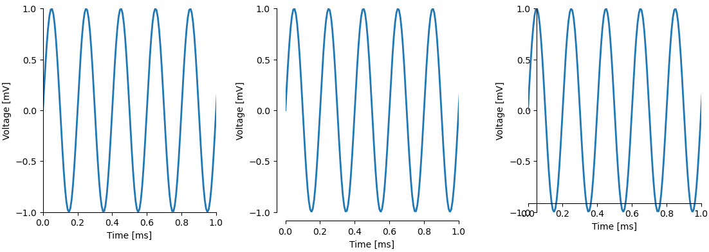
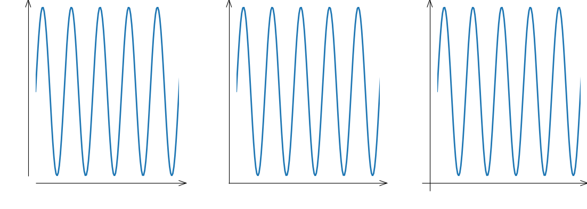

Spines module
Control spine visibility, bounds (extend of spine), position (moving it outward or inward), and arrows.
import matplotlib.pyplot as plt
from plottools.spines import spines_params
spines_params('lb')
fig, (ax0, ax1, ax2) = plt.subplots(1, 3)
Spine visibility
The ax.show_spines() functions controls visibility of spines and
modifies tick and label positions accordingly.

ax0.show_spines('lb')
ax1.show_spines('bt')
ax2.show_spines('tr')
Spine bounds
The length of the spine can span
- the full length of the axis as set by the axis's limits (
'full'), - the extend of the data (
'data'), - the range between the minimum and maximum tick location (
'ticks'). - or any other range on the corresponding axis.

ax0.set_spines_bounds('lb', 'full')
ax1.set_spines_bounds('lb', 'data')
ax2.set_spines_bounds('lb', 'ticks')
Spine position
Spines can be moved outward (positive offset in points) or inward (negative offset).

ax0.set_spines_outward('lb', 0)
ax1.set_spines_outward('lb', 10)
ax2.set_spines_outward('lb', -10)
Arrowed spines
Spines can get an arrow head.

spines_params(spines='', height=10)
ax0.arrow_spines('lb')
ax1.arrow_spines('lb', flush=1.0)
ax2.arrow_spines('lb', flush=2.0)
Default spine appearance
The spines_params() controls the default appearance of spines.